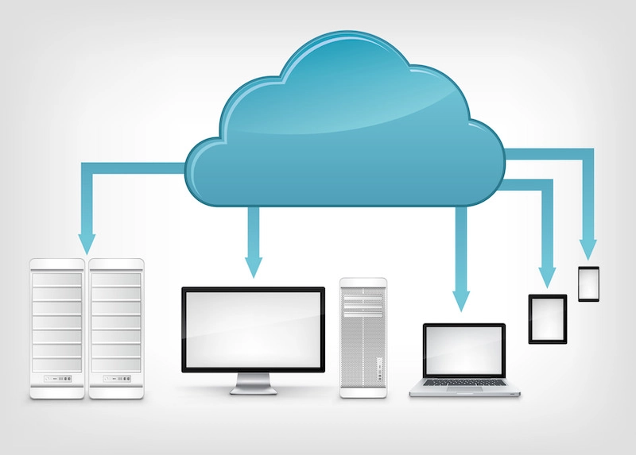
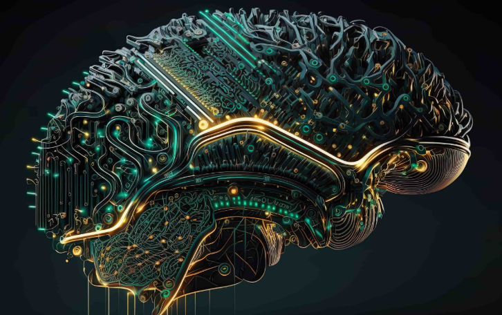
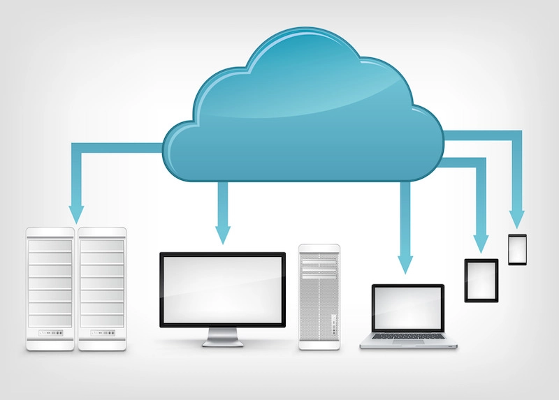
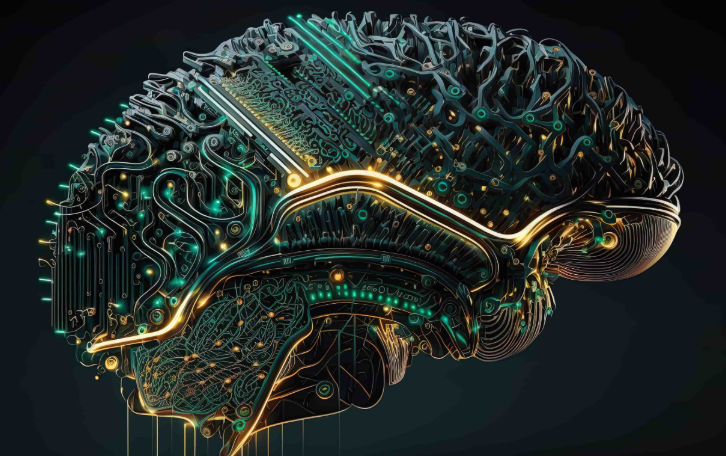

История носителей информации
1. Древние времена
Пещерные рисунки: Одними из первых носителей информации были пещерные рисунки, которые использовались для передачи знаний и историй.
Таблички из глины: В Месопотамии около 3500 года до н.э. начали использовать глиняные таблички для записи информации с помощью клинописи.
2. Античность
Пергамент и свитки: В Древнем Египте и Греции использовали папирус и пергамент для создания свитков, на которых записывались тексты.
Книги: С изобретением книгопечатания в XV веке, книги стали основным носителем информации.
3. Средние века
Рукописные книги: В монастырях переписывались книги, что способствовало сохранению знаний.
Гравюры и иллюстрации: Использование гравюр для иллюстрации текстов стало популярным.
4. Эпоха Возрождения и Новое время
Печатный станок: Изобретение Иоганном Гутенбергом печатного станка в середине XV века революционизировало распространение информации, сделав книги более доступными.
5. XIX век
Фотография: Появление фотографии как способа запечатления информации и событий.
Телеграф: Разработка телеграфа позволила передавать сообщения на большие расстояния.
6. XX век
Радио и телевидение: Новые средства массовой информации, которые изменили способы передачи информации.
Компьютеры: С появлением первых компьютеров в середине века началась новая эра хранения и обработки информации.
7. Цифровая эпоха
Интернет: В конце XX века интернет стал основным носителем информации, обеспечивая мгновенный доступ к данным.
Мобильные устройства: Смартфоны и планшеты сделали информацию доступной в любое время и в любом месте.
Облачные технологии: Хранение данных в облаке стало популярным, позволяя пользователям сохранять и делиться информацией без необходимости в физических носителях.
8. Современность
Искусственный интеллект и большие данные: Современные технологии позволяют обрабатывать и анализировать огромные объемы информации, что открывает новые горизонты для хранения и использования данных.
История носителей информации — это история человеческой цивилизации, отражающая наше стремление к знаниям и коммуникации. Каждый новый этап в развитии технологий открывает новые возможности для хранения, передачи и обработки информации.
 


